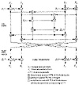

| Previous | Table of Contents | Next |
The number at the positions of “x” can be any number. If this key is used, the bit-wise XOR of certain plaintext pairs guarantees the bit-wise XOR of the resultant ciphertext pairs.
In any case, the chance of accidentally generating one of these weak keys is very small: one in 296. There is no danger if you choose keys at random. And it is easy to modify IDEA so that it doesn’t have any weak keys: XOR every subkey with the value 0x0dae [409].
I know of no other cryptanalytic results against IDEA, although many people have tried.
IDEA Modes of Operation and Variants
IDEA can work within any block cipher mode discussed in Chapter 9. Any double-IDEA implementation would be susceptible to the same meet-in-the-middle attack as DES (see Section 15.1). However, because IDEA’s key length is more than double DES’s, the attack is impractical. It would require a storage space of 64*2128 bits, or 1039 bytes. Maybe there’s enough matter in the universe to create a memory device that large, but I doubt it.

Figure 13.10 PES.
If you’re worried about parallel universes as well, use a triple-IDEA implementation (see Section 15.2):
It is immune to the meet-in-the-middle attack.
There’s also no reason why you can’t implement IDEA with independent subkeys, especially if you have key-management tools to handle the longer key. IDEA needs a total of 52 16-bit keys, for a total key length of 832 bits. This variant is definitely more secure, but no one knows by how much.
A naïve variation might double the block size. The algorithm would work just as well with 32-bit sub-blocks instead of 16-bit sub-blocks, and a 256-bit key. Encryption would be quicker and security would increase 232 times. Or would it? The theory behind the algorithm hinges on the fact that 216 + 1 is prime; 232 + 1 is not. Perhaps the algorithm could be modified to work, but it would have very different security properties. Lai says it would be difficult to make it work [926].
While IDEA appears to be significantly more secure than DES, it isn’t always easy to substitute one for the other in an existing application. If your database and message templates are hardwired to accept a 64-bit key, it may be impossible to implement IDEA’s 128-bit key.
For those applications, generate a 128-bit key by concatenating the 64-bit key with itself. Remember that IDEA is weakened considerably by this modification.
If you are more concerned with speed than security, you might consider a variant of IDEA with fewer rounds. Currently the best attack against IDEA is faster than brute force only for 2.5 rounds or less [1050]; 4 round IDEA would be twice as fast and, as far as I know, just as secure.
Caveat Emptor
IDEA is a relatively new algorithm, and many questions remain. Is IDEA a group? (Lai thinks not [926].) Are there any still-undiscovered ways of breaking this cipher? IDEA has a firm theoretical basis, but time and time again secure-looking algorithms have fallen to new forms of cryptanalysis. Several academic and military groups have cryptanalyzed IDEA. None of them has gone public about any successes they might have had. One might—someday.
Patents and Licenses
IDEA is patented in Europe and the United States [1012, 1013]. The patent is held by Ascom-Tech AG. No license fee is required for non-commercial use. Commercial users interested in licensing the algorithm should contact Ascom Systec AG, Dept CMVV, Gewerbepark, CH-5506, Mägenwil, Switzerland; +41 64 56 59 83; Fax:+41 64 56 59 90; idea@ascom.ch.
A complaint against IDEA, that it uses a 64-bit encryption block, was addressed by Joan Daemen in an algorithm called MMB (Modular Multiplication-based Block cipher) [385, 405, 406]. MMB is based on the same basic theory as IDEA: mixing operations of different algebraic groups. MMB is an iterative algorithm that mainly consists of linear steps (XOR and key applications) and the parallel applications of four large nonlinear invertible substitutions. These substitutions are determined by a multiplication modulo 232 – 1 with constant factors. The result is an algorithm that has both a 128-bit key and a 128-bit block size.
MMB operates on 32-bit sub-blocks of text (x0, x1, x2, x3) and 32-bit sub-blocks of key (k0, k1, k2, k3). This makes the algorithm well suited for implementation on modern, 32-bit processors. A nonlinear function, f, is applied six times alternating with XORing. Here it is (all index operations are mod 4):
The function f has three steps:
All index operations are mod 4. The multiplication operation in step (1) is modulo 232 – 1. For the purposes of the algorithm, if the second operand is 232 – 1, then the result is 232 – 1. The various constants are:
The constant C is the “simplest” constant with a high ternary weight, a least-significant bit of zero, and no circular symmetry. The constant c0 has certain other characteristics. The constants c1, c2, and c3 are shifted versions of c0, preventing attacks based on symmetry. See [405] for more details.
Decryption is the reverse process. Steps (2) and (3) are their own inverse. Step (1) uses ci-1 instead of ci. The value of c0-1 is 0dad4694.
| Previous | Table of Contents | Next |
){kind=link}
){kind=link}